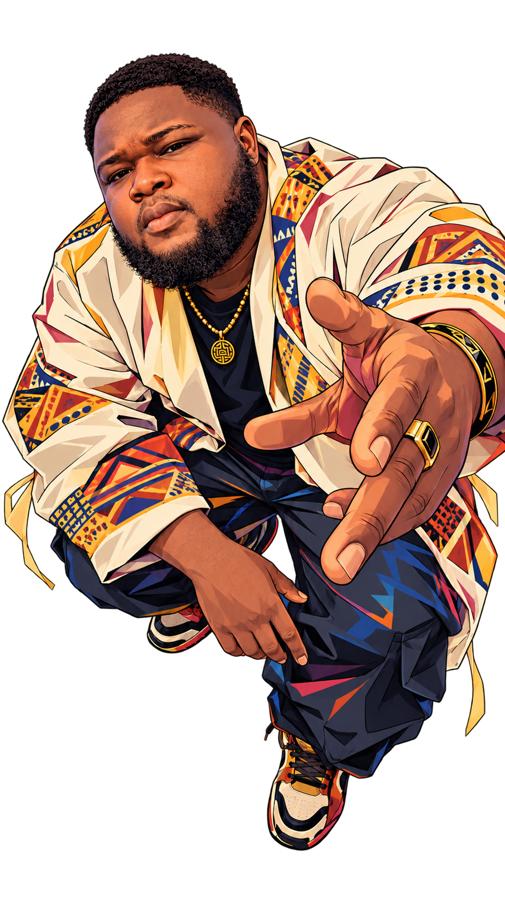

01 / Réservation · SaaS
Slotly
Un système multi-boutiques pour réserver, organiser l’activité et piloter les rendez-vous — de TrouveMonCréneau à un véritable produit.
Visiter le produit ↗25Slotly

Ma polyvalence n’est pas le message. C’est le moyen : comprendre plusieurs côtés d’un même problème et les faire travailler ensemble.
Trois contextes très différents. Une même capacité : partir d’un besoin réel, construire une trajectoire et faire exister un produit utilisable.
Un système multi-boutiques pour réserver, organiser l’activité et piloter les rendez-vous — de TrouveMonCréneau à un véritable produit.
Visiter le produit ↗Une veille transformée en expérience éditoriale claire, vivante et immédiatement exploitable.
Explorer la veille ↗Une expérience quotidienne faite de micro-leçons, de découvertes, de quiz et de progression personnelle.
Découvrir le produit ↗Découvrir le vrai problème, mettre tout le monde d’accord, puis accompagner le passage au réel.
Entrer dans le métier, observer les processus, écouter les utilisateurs et faire apparaître le vrai problème derrière la demande initiale.
Transformer le flou en besoins explicites, décisions, priorités, parcours, responsabilités et trajectoire de livraison.
Aligner les personnes, arbitrer et accompagner les équipes jusqu’à un produit réellement utilisable.
e-Track / SOFTLOGIS, interfacé à l’ERP IRIUM.
Une visibilité opérationnelle multi-pays.
exigences réparties sur neuf modules.
besoins consolidés auprès de cinq directions.
Je relie les besoins de plusieurs directions aux réalités d’un système logistique multi-pays : consolidation des besoins, cadrage des exigences, prototypes métier, arbitrages et accompagnement de la livraison.
J’ai transformé des objectifs de communication en dispositifs visuels cohérents, en conciliant message, attention, compréhension et contraintes de diffusion.
Cette étape m’a appris à construire des langages visuels capables de rester cohérents dans des contextes variés, tout en donnant aux équipes des repères concrets pour décider et produire.
J’ai observé les usages, mené des audits et des tests, puis transformé les constats en recommandations actionnables et en composants réutilisables pour les équipes produit.
Le développement frontend m’a donné une compréhension concrète du passage de la maquette au navigateur : contraintes responsive, accessibilité, performance et précision d’exécution.
Des terrains d’essai autour de l’audit, de l’apprentissage, de l’organisation, de la mobilité et des usages quotidiens.